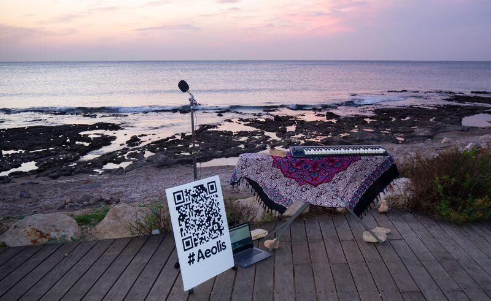
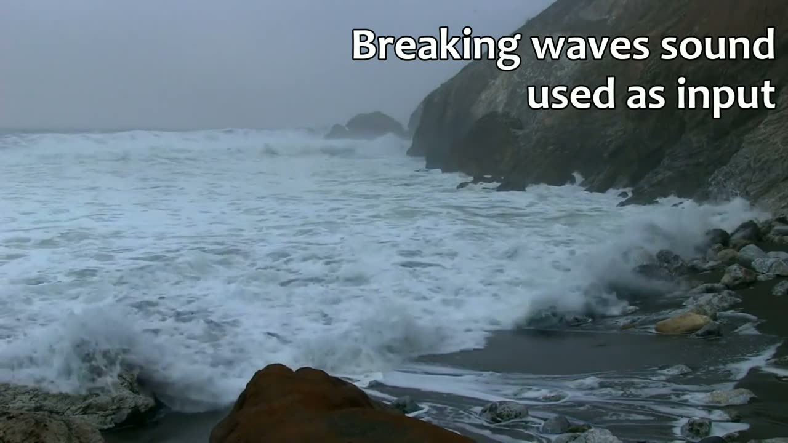
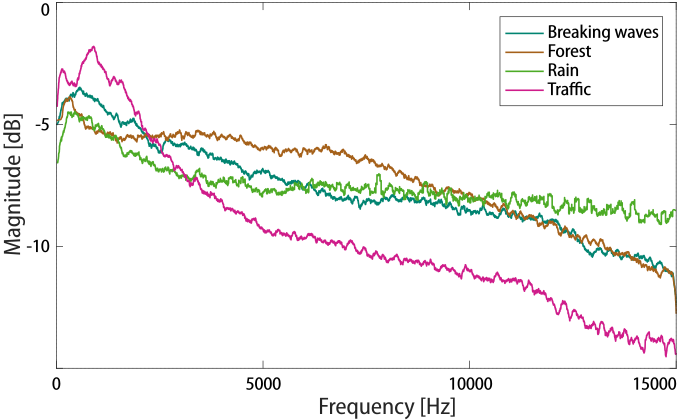
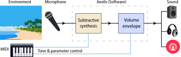
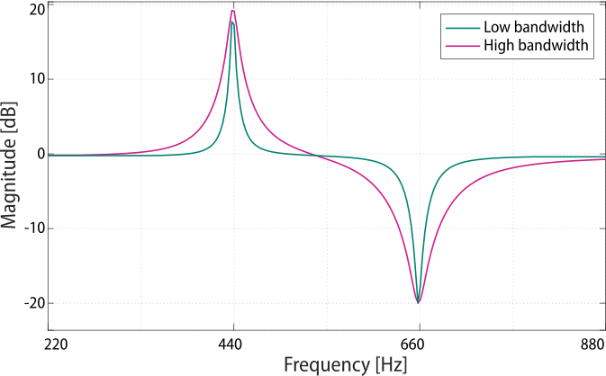
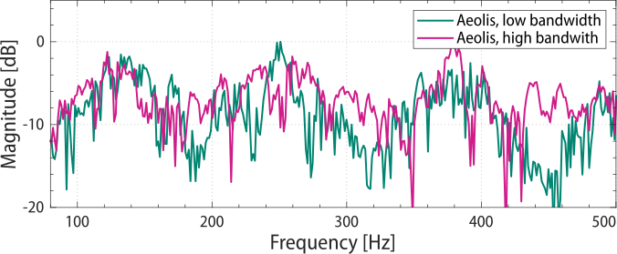
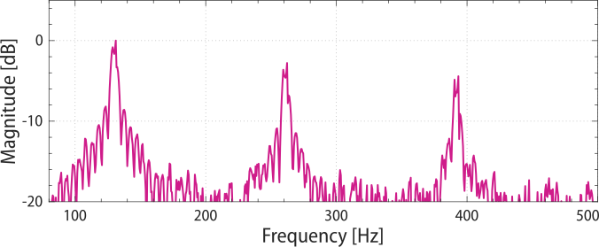
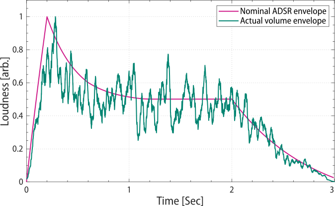
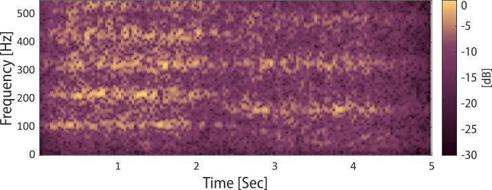
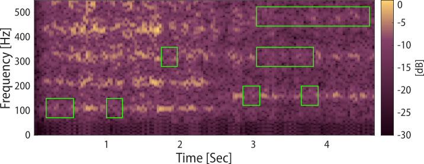

Aeolis: A Virtual Instrument Producing Pitched Tones With Soundscape Timbres
Abstract
Ambient sounds such as breaking waves or rustling leaves are sometimes used in music recording, composition and performance. However, as these sounds lack a precise pitch, they can not be used melodically. This work describes Aeolis, a virtual instrument producing pitched tones from a real-time ambient sound input using subtractive synthesis. The produced tones retain the identifiable timbres of the ambient sounds. Tones generated using input sounds from various environments, such as sea waves, leaves rustle and traffic noise, are analyzed. A configuration for a live in-situ performance is described, consisting of live streaming the produced sounds. In this configuration, the environment itself acts as a ‘performer’ of sorts, alongside the Aeolis player, providing both real-time input signals and complementary visual cues.
Author Keywords
Soundscape, Nature sounds, Synthesis, Computer music
CCS Concepts
•Applied computing → Sound and music computing; Performing arts; •Hardware → Digital signal processing
1. Introduction


The setup of an Aeolis performance conducted by the authors. Ambient breaking waves sound was captured by a microphone. The captured signal was processed in real-time by Aeolis and live streamed online. The audience listened to the performance via headphones, while watching visual cues from the environment itself.
Environmental ambient sounds such as the sound of breaking waves, rain, and wind, are all characterized by having a broad spectral content. These sounds are distinct and recognizable due to particular sonic characteristics. Musically, ambient sounds are used as the primary components of soundscape composition, and for other uses, such as adding atmosphere to musical pieces. However, since ambient sounds are typically characterized by broad spectra without perceived pitches, they are unsuitable for the production of melodies and harmonies.
Subtractive synthesis is a sound synthesis method by way of attenuating or eliminating frequency components of a given input. The process results in a new output sound with altered timbre and sonic qualities. This method is the opposite of additive synthesis, where a sound is synthesized by the addition of spectral components. Subtractive synthesis facilitates the preservation of an input sound’s characteristics, such as timbre and volume envelope. While extensive subtraction results in a sound greatly different than the input, a mild subtraction retains much of the initial qualities.
This paper presents Aeolis, a virtual instrument producing real-time pitched tones with soundscape timbres using subtractive synthesis. Aeolis uses a broad spectrum sound as input. The input signal is either captured in-situ by a microphone and processed in real-time, or recorded and processed offline. The synthesis uses cascaded high bandwidth peak and notch filters, tuned to a musical tone’s harmonic series. Processing the input signal with the cascaded filters results in a pitched musical tone with the ambient sound’s sonic qualities. Aeolis is played by a MIDI controller and allows the simultaneous generation of multiple pitched tones. Figure 1 shows an Aeolis performance setup, where breaking beach waves provide both Aeolis’s input signal, and visual cues complementing the performance.
Video 1 demonstrates Aeolis playing a phrase with two different input sounds, and the complementary visuals: breaking waves and traffic noise. Sound Samples 1-2 demonstrate the same phrase with additional input sounds: rustling leaves and rain. Video 2 demonstrates a short musical sample incorporating Aeolis sounds, produced with traffic noise input sounds.

▶Aeolis sounds produced from ambient sounds, and the complementary synchronized video captured at the scene. Ambient breaking waves input, followed by the same phrase using ambient traffic noise.
Aeolis sounds produced with a rustling leaves input.
Aeolis sounds produced with rain input.
A short musical sample incorporating Aeolis sounds, produced with traffic noise input, and the complementary synchronized video.
2. Related Work
2.1. Subtractive Synthesis
Subtractive synthesis is a sound production method where output sound is synthesized by selectively filtering the spectrum of a source sound. The source is typically a broad spectrum sound, such as white noise or narrow periodic pulses [1]. Band pass and band reject filters are often used, as well as low pass and high pass filters. Subtractive synthesis offers an advantage to additive synthesis by facilitating the generation of time-varying sounds. Temporal changes in the source’s volume and spectrum translate to temporal changes in the output sound. This method is useful for imitating acoustic instruments with dynamic timbres [2].
Subtractive synthesis was widely used in analog synthesizers in the 1960’s and 1970’s, most notably in the Moog synthesizer [3]. The Karplus-Strong algorithm [4] and digital waveguide synthesis [5], while considered to be algorithms of physical modeling, share similarities with the subtractive synthesis method. Subtractive synthesis is still commonly used in modern works. One example is ’FuturGrab’, a wearable synthesizer which maps hand gestures to vowel formants filtering by subtractive synthesis. The input signal consists of three saw-tooth waves and some noise [6].
Aeolis, presented here, uses subtractive synthesis much like the digital reproductions of the above-mentioned analog synthesizers. However, Aeolis’s tones are considerably different for two reasons: first, the above-mentioned methods typically use periodic electronic input sources, while Aeolis is designed to use captured soundscapes containing dynamic and arbitrary acoustic properties. Second, Aeolis uses filters with intentionally very large bandwidths. Thus, Aeolis’s tones retain the input signal’s recognizable tonal characteristics, while synthesizers do not, and were not intended to, sound like pitched white noise or sawtooth waves.
2.2. Soundscape Acoustics
Soundscapes are defined as the sum total of sounds in a particular environment, both natural and man-made [7]. Natural sounds include Biophony - sounds produced by animals, such as bird and whale songs, and Geophony - naturally occurring non-biological sounds such as wind, rain, rustling leaves and flowing water [8]. Man-made sounds, produced directly by humans or indirectly via instruments, are referred to as Anthropophony.
Soundscapes are often, but not always, characterized by a broad spectral content, as they blend sounds of many individual acoustic events. To illustrate, consider a single bird call. The call is likely to consist of specific frequencies and have a well defined volume envelope and pitch. Contrarily, consider the soundscape of an entire forest. The forest sound is composed of various components: bird, insect and animal sounds, rustling leaves, whistling wind, falling rain drops etc. The forest soundscape thus has a broad frequency spectrum and lacks a definite pitch. Temporarily, each acoustic event such as a burst of wind or an animal call, contributes its own volume envelope. These events overlap to maintain sound intensity often devoid of abrupt changes. Figure 2 shows spectra of several soundscapes obtained online.


Spectra of various soundscapes obtained online. All spectra are characterized by a broad bandwidth,
covering the entire hearing range and lacking distinct narrow peaks.
2.3. Soundscape Music
It is hypothesized that human music owes many of its early origins to the natural world’s sounds [9]. For early societies living immersed in the natural world, the soundscape served as the literal background sound. Thus, the music made by these societies evolved to correspond with the soundscape and augment it. The geophony and biophony also contain particularly musical sounds, such as the sounds produced by ice candles floating in rivers, wind blowing in natural growth reeds and the musical call of birds such as the potoo, which resembles a major pentatonic scale.
During the 20th century, the accepted definitions of music were changing. The soundscapes produced by the environment were becoming recognized as music [10]. Fittingly, the sound producing environment itself can be considered as an instrument. In a poetic, anthropomorphic phrasing, it may be proposed that the environment would even be considered as a performing musician.
The World Soundscape Project, founded in 1969 by Schafer [7], is an international research project focusing on soundscapes and the sonic aspect of human environment relations [11]. This project gave birth to the soundscape composition movement, making use of soundscape recordings for the creation of musical pieces. Truax [12] provides a thorough overview of soundscape composition techniques, such as using the unprocessed original recordings (’found sound’), mixing, layering, creating multichannel spatial localization, time stretching and equalization.
Modern works combine traditional soundscape composition with novel technologies. Urban sounds are used in numerous works, such as Sonic City [13], which consists of a wearable interface generating real-time soundscape electronic music. Sounds are captured from an urban environment, processed by various digital effects and mapped to input parameters captured from the environment itself. A natural soundscape is used in The Argus Project [14], a sound installation located at a pond. The installation is based on underwater sounds captured by hydrophones. The captured sound is processed, based on optical input obtained from the water surface and projected via loudspeakers.
2.4. Similar Works and Methods
A great variety of works and musical techniques blend elements of soundscapes and natural sounds with pitched tones. In the realm of traditional music, Levin and Edgerton [15] claim that the desire to duplicate natural sounds is the core aesthetic idea behind Tuvan throat singing. The singing imitates and represents natural sounds of the local traditional soundscape such as babbling water, galloping horses and wild animal calls. This is despite the fact that throat singing mostly produces pitched tones.
A somewhat similar example is found in a specific performance technique of the didgeridoo. In this technique, the player vocalizes sounds using the vocal chords, simultaneously to playing the instrument normally. Traditionally, the vocalization is intended to imitate animal sounds. The vocalization is modulated by the instrument’s resonator, resulting in a subtle pitch-like sensation [16].
An example of a pitched soundscape is found in Traux’s work Island, containing recordings of waves, a flowing river and a cistern, all processed by a digital resonator with a strong feedback. The processing results in clearly defined pitched tones. The tones, most apparent at the very beginning and ending of the piece, were intentionally designed to only slightly reveal the sound’s origin through the waves’ rhythmic pattern [12].
Finally, it is worth mentioning the familiar phenomenon of the seashell effect, occurring when a seashell is placed in proximity to the ear. The seashell acts as an ambient sound resonator, emphasizing specific frequencies. The produced effect often sounds like ambiguous pitched noise, and sometimes may even resemble a pitched soundscape [17].
Judging by the variety of these examples, it would be safe to assume that
countless more similar works are still unknown to the authors. However, the authors are unaware of an existing instrument with all the properties presented in this work: the ability to produce real-time pitched tones, using any given soundscape input and with extensive user control.
3. Musical Concept
Aeolis produces sounds with identifiable raw soundscape qualities. As such, it may be categorized as a soundscape composition instrument. On the other hand, Aeolis creates a pitch sensation that is typically disconnected from the soundscape. Thus, much like the above-mentioned Tuvan throat singing, Aeolis may be best described as an intermediate musical stage between natural soundscapes and man-made musical systems and tonality. Poetically, Aeolis literally interprets Schafer’s [7] reference to “the tuning of the world”.
Informal evaluations conducted throughout Aeolis’s technical development revealed that the produced sounds, when disconnected from the input producing landscape, were often unintelligible. Listeners typically either did not notice the pitched tones, or could not identify the soundscape origin. While not necessarily a disadvantage, this deviates from the authors’ original concept. Therefore, specific efforts were invested in facilitating live in-situ performances, further described in Section 6.
In an in-situ live performance, a location’s existing soundscape is used as a sound source, while the scene itself, such as trees swaying in the wind, provides sights complementary to the synthesized sounds. This usage mode is intended to result in an immersive experience, where the environment itself and its numerous features - wind, rain, trees etc., acts both as an instrument and as a performer. In other words, a performance taking place in a forest is intended to create in the most convincing manner the illusion that “the forest is singing”. The Aeolis player joins the environment as an additional member in this large ensemble.
4. Design
4.1. Architecture and Configuration
Aeolis is a software instrument, developed in the JSFX tool and implemented as a Virtual Studio Technology (VST) plug-in. JSFX is a tool used for the development of audio effects, chosen due to its ease-of-use and streamlined debugging features. The instrument consists of a handful of code files executed by Reaper, an affordable Digital Audio Workstation (DAW).
The stages of Aeolis sound production are shown in Figure 3. First, a sound signal is routed to the input. The signal is processed to a pitched tone by the application of subtractive filters. An Attack-Decay-Sustain-Release (ADSR) volume envelope is then applied to the generated tone. Finally, the tone is reproduced by loudspeakers or headphones. The instrument supports generation of simultaneous tones by parallel filtering of the input signal.


Aeolis block diagram. Captured environment sound is used as the input signal.
A pitched tone is generated by subtractive synthesis and shaped by a volume envelope.
The tone is reproduced by loudspeakers or headphones, or live streamed online.
Aeolis supports two usage modes: offline and real-time. In the offline mode, prerecorded audio is used as the input signal. In the real-time mode, sound captured in real-time is used as the input signal. In both modes, the input signal is routed to Aeolis’s input track. Aeolis uses the MIDI control as is standard in virtual and software instruments, which also allows for customized user mapping. Typically, tones are activated and deactivated by pressing and releasing the note keys on a MIDI keyboard. A modulation wheel controls the timbre by adjusting the filters bandwidth, as further discussed in Section 4.2. The authors had used Aeolis on a mid-range laptop with a 4-core processor and 8Gb of RAM, resulting in measured latency shorter than 5msec in both modes.
Aeolis takes its name from the term Aeolian Processes, describing how wind shapes the surface of rocks by abrasion and erosion. This process, which sometimes results in surprisingly aesthetic geometries, is a form of natural “subtractive synthesis”.
4.2. Subtractive Synthesis Tone Production
The subtractive synthesis process consists of a series of cascaded peak and notch filters, shown in Figure 4. Each peak filter amplifies a frequency band around a center frequency peak. Complementary, each notch filter attenuates a frequency band around a center frequency notch. For generating a pitched tone with a fundamental frequency , the peak filters are centered at the harmonic series ,2f0,3f0,... . The notch filters are centered at the shifted harmonic series ,2.5f0,3.5f0,..., so each notch falls in the center between adjacent peaks. Figure 5 shows the frequency response of a single peak at 440Hz cascaded with a single notch at 660Hz.

The subtractive synthesis block for a single tone: cascaded peak and notch filters process
the input signal to a harmonic series. Multiple tones are generated by parallel stages.


Frequency responses of the first stage of peak and notch filters, producing an A4 tone.
The peak is centered around 440Hz and the notch around 660Hz. The broad bandwidth filters (purple) retain more of the input signal’s original timbre. The low bandwidth filters (green) produce a more distinct pitch, but with a less distinct timbre.
Both peak and notch filters are implemented as digital biquad filters defined by their gain, and bandwidth, , where for a peak filter and for a notch filter. The processing is implemented in the time domain by the difference equation:
1(b0x[n]+b1x[n−1]+b2x[n−2]−a1y[n−1]−a2y[n−2])
where is the input signal from the previous stage, is the output signal, is the discrete time variable and ,bi are the coefficients. The coefficients are derived from the gain , the bandwidth and the center frequency as formulated by Smith [18]. The stages are cascaded by using a stage's output, , as the next stage's input, .
The filters’ bandwidths affect the produced tone’s timbre, ranging from a somewhat coarse timbre, to a pure synthetic one. The bandwidths may be controlled by MIDI, typically by a modulation wheel, allowing to gradually change timbre in mid-play. The bandwidths affect on timbre is further detailed in section 5.1. Typically, up to 20 stages of peaks and notches are cascaded, as additional stages were found to have a diminished effect.
In a live setting Aeolis requires a continuous sound input. Naturally, ambient sounds sometimes cease unexpectedly, cutting off Aeolis’s sound in mid-play. A feature for filling-in short silence gaps in the input signal was implemented. The feature consists of playing pre-recorded sounds processed by random volume envelopes. The feature is not detailed here due to length constraints.
5. Sound Analysis
Tones produced by Aeolis contain significantly arbitrary properties, as they depend on unpredictable input sources. As the input source dynamically changes its frequency content and loudness, the tones produced by Aeolis change. Thus, two consecutive tones produced by Aeolis, using the same exact properties, will have different characteristics. This arbitrariness is contrasted with more traditional subtractive synthesis tones, driven with periodic waves or noise signals. In traditional subtractive synthesis, the produced tones are repeatable, having mostly uniform spectra and envelopes.
5.1. Spectrum
Figure 6 shows the spectrum of two C3 tones produced by Aeolis with a breaking waves input signal, using different filters’ bandwidth. The tone produced with the larger filter bandwidth retains more of the input signal’s timbre. Thus, the timbre is easily recognizable but the pitch quality is less pronounced. The tone produced with a smaller filter bandwidth has a better defined pitch quality, but a less recognizable timbre. Both tones were produced using an input signal acquired from the same source, but using different points in time of that same signal. As the source signal and its
spectrum are dynamic, the resulting tones exhibit local peaks at somewhat different locations. The tones are presented in Sound Samples 3 and 4.


Spectra of two Aeolis C3 tones, synthesized from a breaking waves input signal.
Low bandwidth filters generate a tone with narrow peaks and a well defined pitch,
but with a less distinct timbre (green). High bandwidth filters generates a tone with wider peaks
and a less distinct pitch, but with a more pronounced soundscape timbre (purple).
An Aeolis tone produced with high bandwidth filters, and breaking waves input.
An Aeolis tone produced with low bandwidth filters, and breaking waves input.
Aeolis’s tones are contrasted with a software Minimoog tone shown in Figure 7. The Minimoog tone was produced by subtractive synthesis of a white noise source. The tone is characterized by a well defined pitch, as apparent from its narrow peaks, an electronic sounding timbre, and only a slight “noisy” quality. The tone is presented in Sound Sample 5.


A Minimoog’s C3 tone produced by subtractive synthesis of a noise source,
shown as a reference. This tone’s peaks are considerably narrower than Aeolis’s.
A Minimoog tone produced by subtractive synthesis from a white noise input.
5.2. Volume Envelope
The arbitrariness of Aeolis’s tones is also apparent in their volume envelope. This is demonstrated by Figure 8, showing a tone produced with a breaking waves input signal and processed with an ADSR envelope. In addition to the ADSR envelope, the output tone’s volume envelope also depends on the input source itself, typically characterized by varying loudness levels. For instance, the loudness levels of rustling leaves or beach waves vary greatly between bursts of winds and wave breaks. As such, the resulting Aeolis tone, while generally following the nominal ADSR loudness levels, contain significant arbitrary irregularities. The tone is presented in Sound Sample 6.


The volume envelope of an Aeolis tone produced with breaking waves input signal. The tone is modulated by a nominal ADSR envelope (purple). As the input signal itself is of varying loudness, the actual resulting volume envelope (green) contains arbitrary dynamics while generally following the nominal ADSR envelope.
Aeolis tone modulated by an ADSR volume envelope.
5.3. Suitability of Input Signals
The choice of an input signal has an immense effect on Aeolis’s output tones. Technically, any sound can be acquired and used as an input signal, and the choice of an input signal is ultimately a subjective preference. Yet, some guidelines may be formulated to describe general characteristic and outcomes of different input signals.
Figure 9 shows the lower harmonics of two consecutive Aeolis tones (A2 and E3) produced using a beach waves input signal. This particular input signal was acquired from a mostly calm beach with mild breaking waves. The beach sound is characterized by a wide and steady spectrum and a mostly steady loudness level, both devoid of abrupt changes. Consequently, the resulting Aeolis tones exhibit a mostly steady spectral content throughout the tones’ duration across all harmonics. The tones are presented in Sound Sample 7.


A spectrogram of Aeolis A2 and E3 tones, produced with breaking waves input signal.
The tones are characterized by steady loudness, throughout the entire segment and in each specific harmonic.
Aeolis tones produced with a breaking waves input. The tones demonstrate steady spectral content throughout the duration
and across all harmonics.
Figure 10 demonstrates a contrary case of the same tones produced with an input signal of a dawn chorus - the singing of multitudes of birds before dawn. This specific signal’s spectrum and loudness vary greatly through time as different birds’ calls are significantly sonically diverse. Furthermore, many individual loud bird calls are distinctly detectable. The resulting Aeolis tones are characterized by unsteady loudness and spectra. This is reflected in the spectrogram, where several time-frequency bins, within an harmonic, show little to no energy. Note that E3’s third harmonic is almost entirely missing. Perceptually, these tones are characterized by rapid successive drops in loudness. The resulting effect is somewhat akin to that obtained with excessive dynamic range compression (“choking sound”), an effect mostly perceived as undesirable. Furthermore, exceptionally loud individual bird calls in the input signal are still identifiable in the output tone. Ultimately, the resulting tones sound somewhat like an overlay of an ambiguous chocked pitched ambient tone with unprocessed bird calls. The tones are presented in Sound Sample 8.


A spectrogram of A2 and E3 tones produced with a dawn chorus input signal. These tones are characterized by fluctuating loudness and energy gaps in the individual harmonics,
highlighted in green. Note that E3’s 3rd harmonic is almost entirely missing.
Aeolis tones produced with a dawn chorus input.
The tones demonstrate unsteady spectral content,
time-frequency bins lacking in energy,
some missing harmonics, and identifiable bird calls.
The above example may guide the selection and acquisition of input sources. Sounds consisting of a wide steady spectrum and a mostly steady loudness level result in Aeolis tones steady in both loudness and spectrum. These sounds are typically composed of multitudes of similar acoustic sources, such as a large rustling forest, an open beach or a highway with dozens of passing cars. Optimally, the signal is acquired from a moderate distance, so that no single sound source, such as an individual passing car, is significantly louder than the rest. Loud sounds with distinct spectral content, such as individual bird calls or car horns, tend to remain identifiable in the output tone. Therefore, soundscapes containing such sounds should perhaps be avoided.
6. Live In-Situ Performance
An Aeolis live in-situ performance requires a location providing both a suitable audio source and a complementary visual scene. Additionally, while Aeolis sound may technically be projected over speakers, it is likely to be indistinguishable from the existing soundscape. Thus, it is preferred that the audience be at least somewhat acoustically insulated from the environment. Then, Aeolis’s output sounds and the environmental input sounds may be carefully mixed by the performer.
The authors had considered two distinct types of performances. The first type consists of performing in an enclosed space overlooking a sound producing scene, such as a shop adjacent to a noisy street. As acoustic insulation is provided by the structure, Aeolis sound may be projected by loudspeakers without risk of feedback. The second type consists of an outdoor location within the environment itself, such as a beach. While indoor locations may have logistical advantages, outdoor locations may provide more immersive experiences, as the audience is fully present in the scene.
The authors had conducted trial Aeolis performances in three outdoor locations, each with a different source signal: a beach promenade with breaking waves, a pedestrian bridge with traffic noise and a nature reserve outside the city, consisting of a forest with rustling leaves and some insect sounds. The performances were targeted at an invited audience, as well as passersby.
The setup used in all performances is shown in Figure 1. For projecting Aeolis sounds and providing partial insulation from the environment sounds, the authors chose the method of a “silent disco”, where the audience listens to the concert via headphones in real-time. A thorough consideration of this method is given by Dobda [19]. The setup consisted of a MIDI keyboard, a laptop, a microphone and a smartphone.
The Aeolis sound produced on the laptop was streamed live to Youtube over mobile data. This method was chosen over the common FM broadcast method, as FM transmission often requires coordination with authorities and introduces additional obstacles. A QR code, linking to the live Youtube stream, was printed on a large poster and placed next to the player. Invited audience members, as well as passersby, joined the live stream by scanning the QR code. The audience listened to the live stream using their individual headphones while observing the sound producing environment and the Aeolis player. As the live stream consisted of a single audio channel, low latency settings were employed without a loss of quality. This resulted in a latency of 2.5 seconds, where the cellular coverage was sufficient.
7. Discussion
The trial performances conducted by the authors were over-all successful, but unveiled many challenges still yet to be solved in the proposed configuration. Primarily, the configuration requires sufficient cellular reception in the location. The reception in the urban locations (beach, bridge) was sufficient, resulting in a latency of 2.5 seconds. However, in the nature reserve the reception was poorer and the latency was over 5 seconds, with sporadic connection interruptions. This could be expected to exacerbate with larger audiences overloading the cellular network. Another major challenge lies in the precise timing of the performance, requiring a loud active soundscape. Naturally, the sound produced by an environment changes through time, and is dependent on weather, seasons, winds and human activity. In the beach and nature reserve, the authors had to postpone the performances to times of the year with sufficiently strong winds and waves. Even then, as weather is naturally unpredictable, the chance of insufficient input sounds was possible.
Another primary challenge lies in the requirement of each audience member to possess headphones and a smartphone. This condition was easily met in the beach promenade, popular with joggers and hikers already carrying headphones. However, attracting an audience of passersby in most other locations may require the organizers to provide them with headphones. This configuration may also be exclusive towards population groups typically not carrying smartphones, or not digitally literate, such as children or elders. As we view musical experiences as inherently inclusive and social,
this is perceived by us as a major disadvantage. In this regard, it is quite possible that an inclusive indoors performance is over-all preferable.
Unfortunately, the location posing the most challenges was the nature reserve, despite providing the richest soundscape. In addition to the poor reception and the scarcity of passersby, the performance required hauling the equipment by foot into the reserve. The lack of convenient access also prevented many audience members from participating. Eventually, the performance took place in front of a small number of the authors’ personal guests. One advantage of the proposed setup was the minimization of excess noise due to the use of headphones and battery powered equipment. This advantage was of specific importance in the nature reserve, where the delicate natural balance could have been disrupted by the human activity and noise. As Aeolis is intended to celebrate natural soundscapes, it is advised that the environment’s health will receive precedence over artistic considerations. Where disruption of the environment may occur, alternative locations of configurations should be considered.
In addition to performance specific challenges, many aspects of the system may be further developed. While the current implementation consists of a single performer controlling the system, other modes could be envisioned. Aeolis may be implemented as a smartphone ensemble, controlled by multiple performers and audience members simultaneously. Alternatively, the system may be autonomously controlled, incorporating auditory and visual cues captured from the scene. In this implementation, the musical decisions would be left to a combination of the environment and AI, rather than to human users.
The MIDI device controlling Aeolis was not researched thus far, and standard MIDI keyboards were used strictly for convenience. Future research may develop a new customized Aeolis interface. Furthermore, while still popular, the MIDI protocol itself is becoming outdated in many ways. A transition to more modern protocols may be considered.
8. Conclusion
A virtual instrument generating real-time pitched tones with soundscape timbres was presented. The instrument applies subtractive synthesis to a live input of soundscape sounds from natural and man-made environments. While subtractive synthesis methods are often used with broad spectrum sounds, such as white noise, we are unaware of an instrument producing similar sounds or with a similar intended use. A configuration for an outdoor in-situ live performance was presented and tested by the authors. While posing some challenges, the configuration was shown to be viable.
Compliance with Ethical Standards
We hereby declare that this manuscript and the research it describes comply with NIME’s ethical and environmental standards. Special care was dedicated to ensure that the live performances did not have any negative environmental impact whatsoever. Special efforts were made to ensure the live performances were completely socially inclusive.
Acknowledgements
The authors would like to thank the Technion - Israel Institute of Technology for its generous support of this research, and Yoav Y. Schechner for his enlightening insights.
Citations
- ↩Dodge, C., & Jerse, T. A. (1997). Computer music: synthesis, composition and performance. Macmillan Library Reference.
- ↩Bilbao, S. D. (2009). Numerical sound synthesis. Wiley Online Library.
- ↩Pekonen, J., & Välimäki, V. (2011). The brief history of virtual analog synthesis. In Proc. 6th Forum Acusticum, Aalborg, Denmark (pp. 461–466).
- ↩Karplus, K., & Strong, A. (1983). Digital synthesis of plucked-string and drum timbres. Computer Music Journal, 7(2), 43–55.
- ↩Smith, J. O. (1992). Physical modeling using digital waveguides. Computer Music Journal, 16(4), 74–91.
- ↩Han, Y., Na, J., & Lee, K. (2012). FutureGrab: A wearable synthesizer using vowel formants. In Proceedings of the International Conference on New Interfaces for Musical Expression (NIME). Ann Arbor, Michigan.
- ↩Schafer, R. M. (1993). The soundscape: Our sonic environment and the tuning of the world. Simon and Schuster.
- ↩Krause, B. (2008). Anatomy of the soundscape: evolving perspectives. Journal of the Audio Engineering Society, 56(1/2), 73–80.
- ↩Krause, B. (2012). The great animal orchestra: finding the origins of music in the world’s wild places. Back Bay Books.
- ↩Farrell, B. (2016). Music and Nature. ReVista (Cambridge), 15(2), 2.
- ↩Truax, B. (1974). Soundscape studies: an introduction to the World Soundscape Project. Numus West, 5.
- ↩Truax, B. (2002). Genres and techniques of soundscape composition as developed at Simon Fraser University. Organised Sound, 7(1), 5–14.
- ↩Gaye, L., Mazé, R., & Holmquist, L. E. (2003). Sonic City: the urban environment as a musical interface. In Proceedings of the International Conference on New Interfaces for Musical Expression (NIME) (Vol. 3, pp. 109–115). Montreal, Canada.
- ↩Kirk, J., & Weisert, L. (2009). The Argus Project: underwater soundscape composition with Laser-controlled modulation. In Proceedings of the International Conference on New Interfaces for Musical Expression (NIME) (pp. 290–292). Pittsburgh, PA, USA.
- ↩Levin, T. C., & Edgerton, M. E. (1999). The throat singers of Tuva. Scientific American, 281(3), 80–87.
- ↩Fletcher, N., Hollenberg, L., Smith, J., & Wolfe, J. (2001). The didjeridu and the vocal tract. In Proceedings of the International Symposium on Musical Acoustics (pp. 87–90).
- ↩Jiang, L.-T., & Smith, J. R. (2012). Seashell effect pretouch sensing for robotic grasping. In 2012 IEEE International Conference on Robotics and Automation (pp. 2851–2858).
- ↩Smith, J. O. (2007). Introduction to digital filters: with audio applications (Vol. 2). Julius Smith.
- ↩Dobda, R. E. (2013). Applied and proposed installations with Silent Disco headphones for multi-elemental creative expression. In Proceedings of the International Conference on New Interfaces for Musical Expression (NIME) (pp. 69–72). Daejeon + Seoul, Korea Republic.